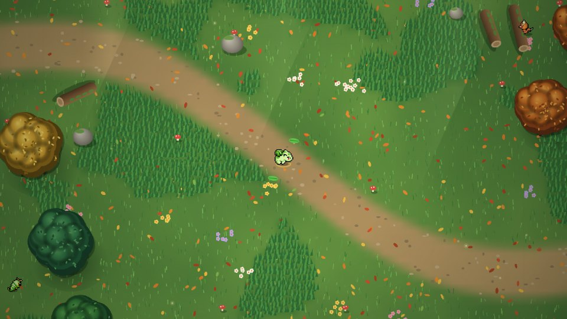
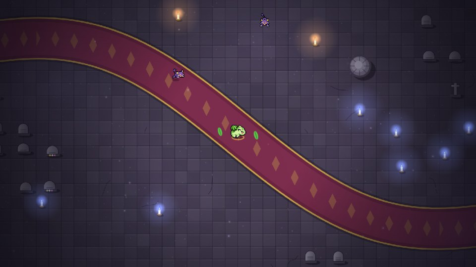
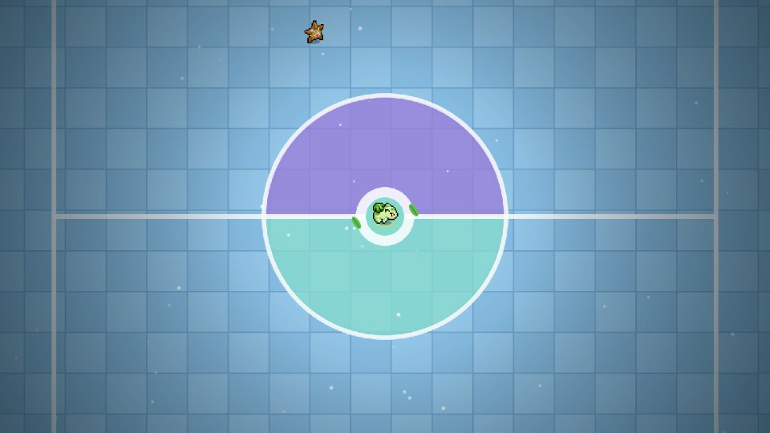
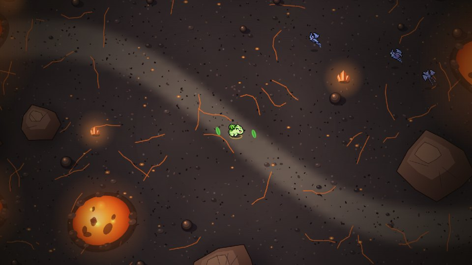
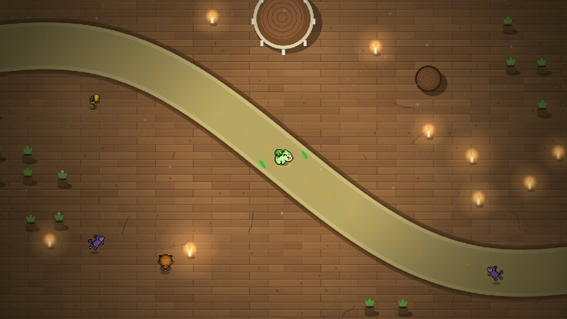

Choix de la carte · 5 prototypes
Après « Confirmer » sur le Pokémon : d'abord la région (Kanto, Johto), puis le niveau. Les images des lieux sont de vraies captures du jeu. Souris (clic pour choisir, re-clic pour lancer), clavier (flèches, Entrée, Échap) ou manette (croix, A, B).
Les boutons en bas à droite simulent la progression : Début (seule la Forêt de Jade est ouverte, Johto fermé), 4 niveaux finis, Tout fini (Johto ouvert). Les Pokémon jamais vus s'affichent en silhouette noire, les boss restent cachés tant que le niveau n'est pas terminé.
Inspirés des jeux montrés

A · ListeVampire Survivors + MegabonkLes deux régions en rectangles verticaux à gauche, les niveaux empilés au centre (vignette + description, cadenas et condition s'ils sont fermés), fiche complète à droite avec le bouton Commencer.

B · CarrouselTemtem SwarmDeux grandes cartes verticales pour les régions, puis un carrousel de cartes verticales : celle du milieu est agrandie, les niveaux fermés sont grisés avec un cadenas hexagonal. Nom sur un bandeau en haut, infos en bas.

C · ProjecteurHolocureFond étoilé bleu, fiche du Pokémon choisi en haut, une grande image à la fois avec des flèches (ou en glissant le doigt), infos à droite, « 🏆 TERMINÉ ! » dessous. Même écran pour la région puis pour le niveau.
Carte blanche

D · CartouchesGame BoyChaque région est une cartouche de Game Boy debout (rouge pour Kanto, or pour Johto) qu'on « insère ». Les niveaux sont des bandes empilées : celle choisie s'ouvre avec l'image, les Pokémon et le bouton Jouer.

E · Panneauxbandes verticalesL'écran est découpé en grandes bandes penchées : deux pour les régions, une par niveau ensuite. La bande choisie s'élargit et montre tout ; les autres gardent un aperçu de leur lieu avec le nom à la verticale.
Les images ont été prises avec capture.html (une vraie partie par niveau, interface cachée).